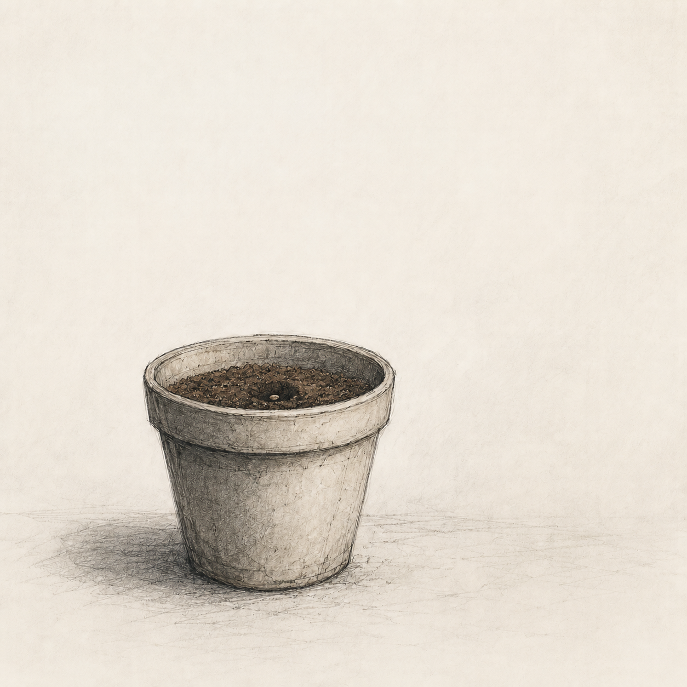

STEP 2 OF 3

2.1 Find something small. Something you are willing to lose.
2.2 Place it where the light hits in the morning.
2.3 Cover it gently. Not too deep. Not too shallow.
2.4 Don't check on it every day. You will disturb the roots.
2.5 Try not to think about them while you do this.
You will think about them.